Shared probes measure action sensitivity, context dependence, and other responses that predict where an operator can help.
01 · Overview
Verified contradictions for continual world-model optimization.
Shared probes reveal how models respond to interventions. Verified outcomes guide operator reuse and refine the probes for subsequent optimization.
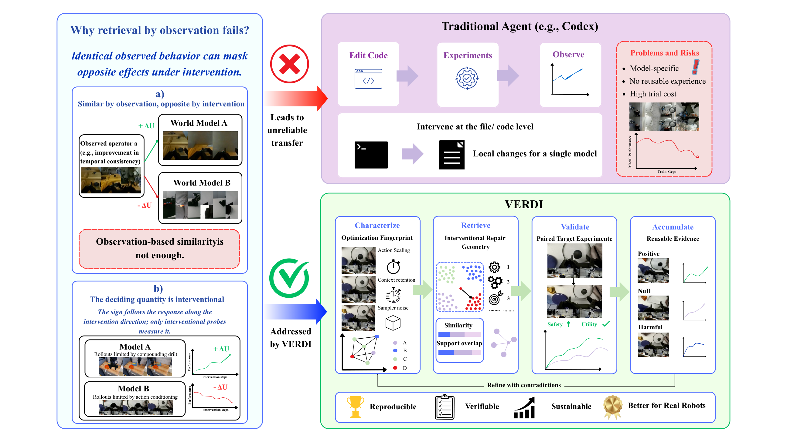
Model-specific operators address diagnosed failures while respecting the target model’s interfaces and evaluation contract.
Paired target experiments classify positive, null, and harmful outcomes under fixed utility and protected-metric criteria.
Verified contradictions motivate new probes; held-out replay and calibration determine which refinements enter the archive.
02 · Method
Probe, retrieve, verify, and refine.
VERDI connects model-specific optimization to an archive of verified outcomes. Operator knowledge and the response geometry used for retrieval evolve together.

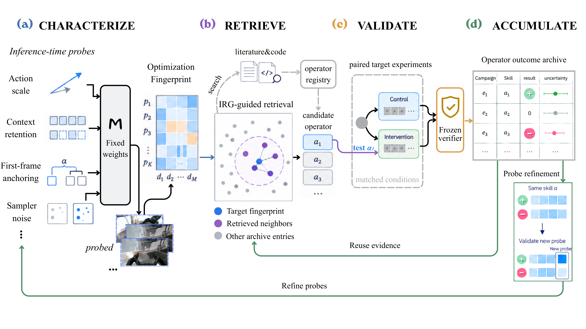
Measure the model-specific response to controlled interventions.
Choose a scoped intervention while preserving fixed interfaces and frozen components.
Settle metrics, controls, validity gates, and environment success using an independent verifier.
Store the model, intervention, receipt, evidence, and claim boundary for certified transfer.
03 · Transfer
Nine backbones. Verified transfer outcomes.
Leave-one-backbone-out evaluation covers 27 campaign–seed units and 216 transfer decisions. Each target contributes 24 decisions.
Gated VERDI reaches the first verified positive in 3.83 trials and 105 GPU-h, compared with 11.41 trials and 318 GPU-h for cold start. Of 102 accepted transfers, 68 are positive, 28 null, and 6 harmful. Trial and compute means first average tasks and repeated searches within a campaign–seed unit, then successful units within each backbone, with equal weight across backbones. Full VERDI completes 24/27 campaigns.
| Strategy | Trials to first verified positive | GPU-h | Coverage | Negative-transfer risk |
|---|---|---|---|---|
| Cold start | 11.41 [10.54, 12.33] | 318 [295.4, 342.3] | — | — |
| Unconditional reuse | 4.21 [3.83, 4.60] | 123 [110.2, 136.1] | 216/216 = 100% | 73/216 = 33.8% |
| Gated VERDI | 3.83 [3.49, 4.17] | 105 [92.4, 118.4] | 102/216 = 47.2% [44.9%, 50.0%] | 6/102 = 5.9% [2.0%, 10.1%] |
| Held-out target | Correct signs / 24 | Cold trials / GPU-h | Unconditional trials / GPU-h | Gated trials / GPU-h | Accepted (positive / null / harmful) | Coverage | Risk |
|---|---|---|---|---|---|---|---|
| Ctrl-World | 17 / 24 | 10.1 / 286 | 3.8 / 104 | 3.3 / 84 | 11 (8 / 2 / 1) | 11/24 = 45.8% | 1/11 = 9.1% |
| Cosmos-Predict 2 | 21 / 24 | 12.4 / 344 | 4.5 / 132 | 3.9 / 108 | 10 (7 / 3 / 0) | 10/24 = 41.7% | 0/10 = 0.0% |
| Cosmos3 | 22 / 24 | 11.1 / 306 | 4.0 / 118 | 3.6 / 96 | 11 (8 / 2 / 1) | 11/24 = 45.8% | 1/11 = 9.1% |
| IRASim | 21 / 24 | 10.7 / 298 | 3.6 / 102 | 3.5 / 91 | 12 (9 / 3 / 0) | 12/24 = 50.0% | 0/12 = 0.0% |
| OccWorld | 17 / 24 | 13.2 / 361 | 4.8 / 142 | 4.4 / 126 | 11 (7 / 4 / 0) | 11/24 = 45.8% | 0/11 = 0.0% |
| DreamerV3 | 22 / 24 | 9.6 / 267 | 3.3 / 94 | 3.0 / 76 | 12 (6 / 5 / 1) | 12/24 = 50.0% | 1/12 = 8.3% |
| TD-MPC2 | 19 / 24 | 13.8 / 385 | 5.2 / 153 | 4.5 / 128 | 12 (8 / 3 / 1) | 12/24 = 50.0% | 1/12 = 8.3% |
| DINO-WM | 20 / 24 | 11.6 / 320 | 4.0 / 117 | 3.7 / 101 | 13 (9 / 4 / 0) | 13/24 = 54.2% | 0/13 = 0.0% |
| V-JEPA 2 | 20 / 24 | 10.17 / 294 | 4.7 / 146 | 4.54 / 137 | 10 (6 / 2 / 2) | 10/24 = 41.7% | 2/10 = 20.0% |
| Total / macro mean | 179 / 216 = 82.9% | 11.41 / 318 | 4.21 / 123 | 3.83 / 105 | 102 (68 / 28 / 6) | 102/216 = 47.2% | 6/102 = 5.9% |
Effect-sign accuracy measures the direction of utility change. Positive, null, and harmful outcomes are assigned by the frozen verifier using gain thresholds and protected metrics. Intervals resample nine backbone clusters; the full protocol is in Appendix E.1.
| Selector | Sign accuracy | Trials | Coverage | Harmful / accepted | Protected violations |
|---|---|---|---|---|---|
| IRG | 179/216 = 0.829 | 3.83 | 102/216 = 47.2% | 6/102 = 5.9% | 0.03 |
| Response-informed RGPE | 171/216 = 0.792 | 4.25 | 102/216 = 47.2% | 12/102 = 11.8% | 0.08 |
| Learned embedding | 160/216 = 0.741 | 4.60 | 102/216 = 47.2% | 15/102 = 14.7% | 0.10 |
04 · Downstream evaluations
Control, manipulation, and navigation.
Seven comparison videos show control, manipulation, and navigation across DreamerV3, V-JEPA 2, DINO-WM, and TD-MPC2. Trajectory snapshots correspond to Appendix E.5, Figures 16–19.
These standalone evaluations measure task outcomes after VERDI-selected interventions and are separate from the 216 LOBO transfer decisions. The table states each metric and evaluation unit.
| Backbone, task, and metric | Baseline | VERDI | Change or result |
|---|---|---|---|
| V-JEPA 2 · Pick and Place | 40/100 = 40% | 75/100 = 75% | +35 pp |
| V-JEPA 2 · Tool Use | 35/100 = 35% | 42/100 = 42% | +7 pp |
| V-JEPA 2 · Push and Pull | 21/100 = 21% | 34/100 = 34% | +13 pp |
| V-JEPA 2 · Open and Close | 32/100 = 32% | 56/100 = 56% | +24 pp |
| V-JEPA 2 · RoboTwin overall | 128/400 = 32.0% | 207/400 = 51.75% | +19.75 pp, approximately 61.7% relative improvement |
| DINO-WM · Wall Navigation (Successful trajectories / evaluated trajectories) | 1/6 = 16.7% | 3/6 = 50.0% | +33.3 pp; 2 additional successful trajectories |
| DINO-WM · Wall Navigation (Mean final distance to goal) | 13.289 grid units | 8.135 grid units | 38.8% reduction |
| DINO-WM · Wall Navigation (Mean distance to goal over the trajectory) | 19.247 grid units | 12.841 grid units | 33.3% reduction |
| DreamerV3 · Walker Walk | Cumulative return 476.5 | Cumulative return 655.4 | +178.9 (approximately +37.5%) |
| DreamerV3 · Reacher Hard | Mean fingertip-target distance 7.4 cm | 0.3 cm | 95.9% reduction |
| TD-MPC2 · Nut Assembly | Before rollout | VERDI rollout | Qualitative trajectory comparison in Layouts 1 and 2 |
DreamerV3 · Walker Walk and Reacher Hard
VERDI selects teacher-guided policy distillation with DAgger for Walker and ReacherIK with PD-teacher supervision for Reacher. In the displayed trajectories, Walker return rises from 476.5 to 655.4, and Reacher mean fingertip–target distance falls from 7.4 to 0.3 cm.
Teacher-guided policy distillation with DAgger. Baseline on the left; the VERDI-selected intervention on the right.
ReacherIK with PD-teacher supervision. Original and fine-tuned policies are shown with their distance and return traces.
Figure 16 · View trajectory snapshots and measurements
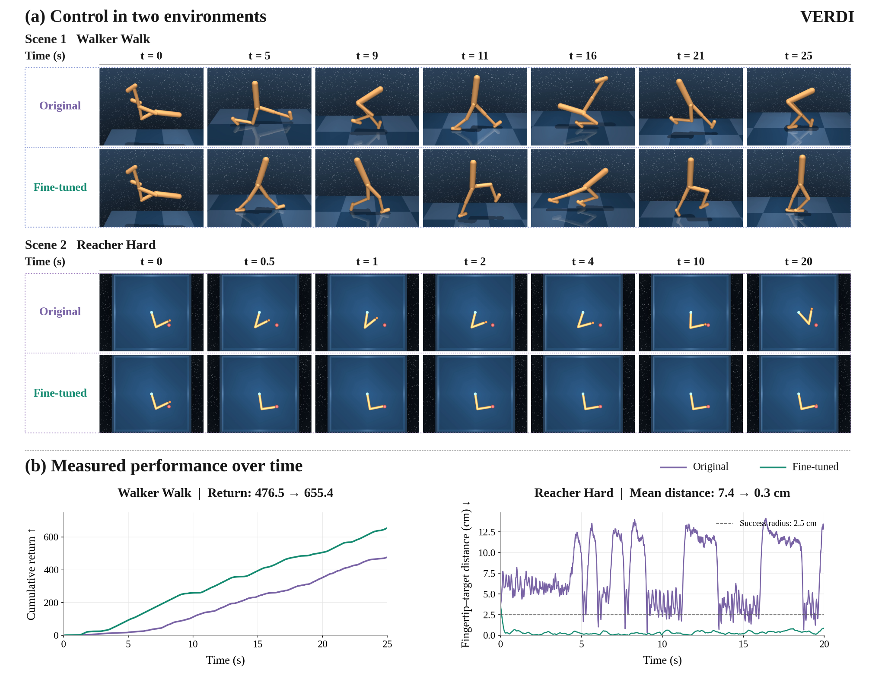
V-JEPA 2 · RoboTwin
VERDI selects Action-MoE and iteratively refines the design before freezing the final configuration. Across four task categories, each with 100 paired episodes per method, success rises from 128/400 (32.0%) to 207/400 (51.75%). The figure shows Pick and Place, Tool Use, and Open and Close; Push and Pull is included in the results table.
The baseline leaves the bottle outside the tray; the VERDI configuration places all three objects inside.
The baseline leaves the orange pieces beside the tray; the VERDI configuration moves them into the tray.
The baseline leaves the green block outside; the VERDI configuration places it inside and closes the drawer.
Left: V-JEPA 2 baseline. Right: VERDI-selected Action-MoE. These three paired examples correspond to Figure 17; their source timing is preserved, with a labeled final-frame hold when a clip ends.
Figure 17 · View trajectory snapshots and measurements
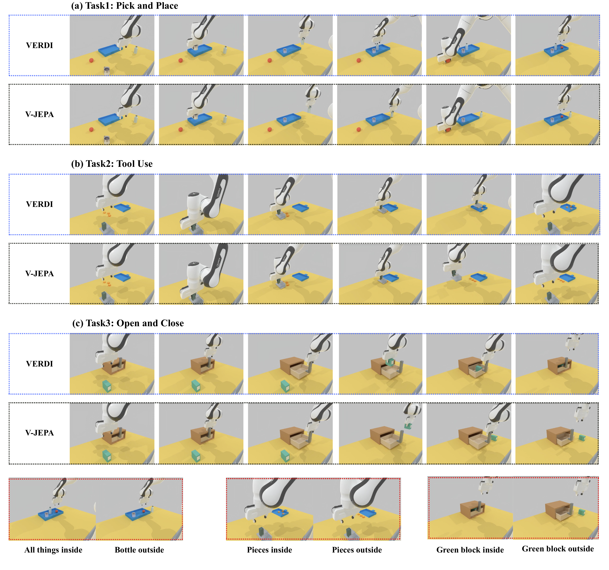
DINO-WM · Wall Navigation
Across six paired start–goal conditions with a shared checkpoint and planning budget, successful trajectories increase from 1/6 to 3/6. Mean final distance falls from 13.289 to 8.135 grid units. Success requires a final distance below 4.5 grid units at control step 100. The two displayed examples illustrate improved navigation; all six paired results are listed below.
Paired rollouts with distance-to-goal traces over 100 control steps. The goal view and success tolerance are shown alongside the trajectories.
Figure 18 · View trajectory snapshots and measurements
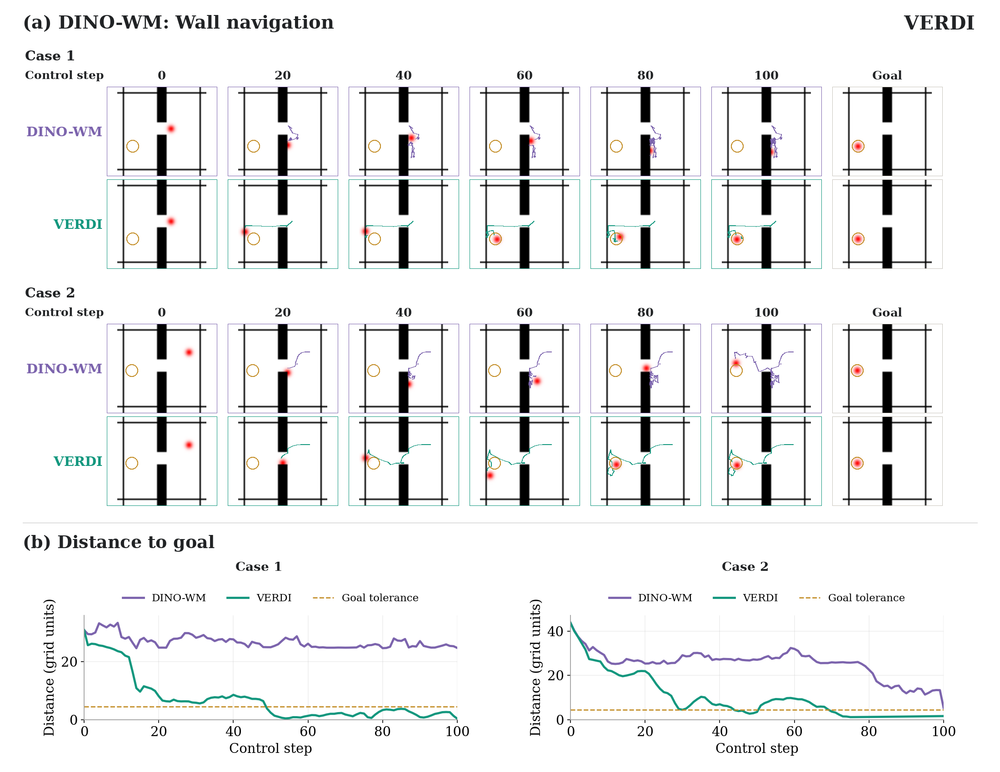
| Evaluation condition (seed) | Baseline final distance | VERDI final distance | Baseline success | VERDI success |
|---|---|---|---|---|
| 10 | 14.707 | 15.831 | No | No |
| 11 | 24.727 | 0.337 | No | Yes |
| 12 | 5.306 | 1.640 | No | Yes |
| 13 | 14.439 | 15.037 | No | No |
| 14 | 18.858 | 14.990 | No | No |
| 15 | 1.695 | 0.973 | Yes | Yes |
| Mean final distance / success count | 13.289 | 8.135 | 1/6 | 3/6 |
TD-MPC2 · Nut Assembly
VERDI selects trust-region-constrained MPPI. The paired trajectories and alignment curves show the resulting behavior in two layouts: the baseline remains misaligned during Layout 1 and aligns later in Layout 2.
Before/after rollouts for trust-region-constrained MPPI, with the alignment and return traces supplied in the demonstration.
Figure 19 · View trajectory snapshots and measurements
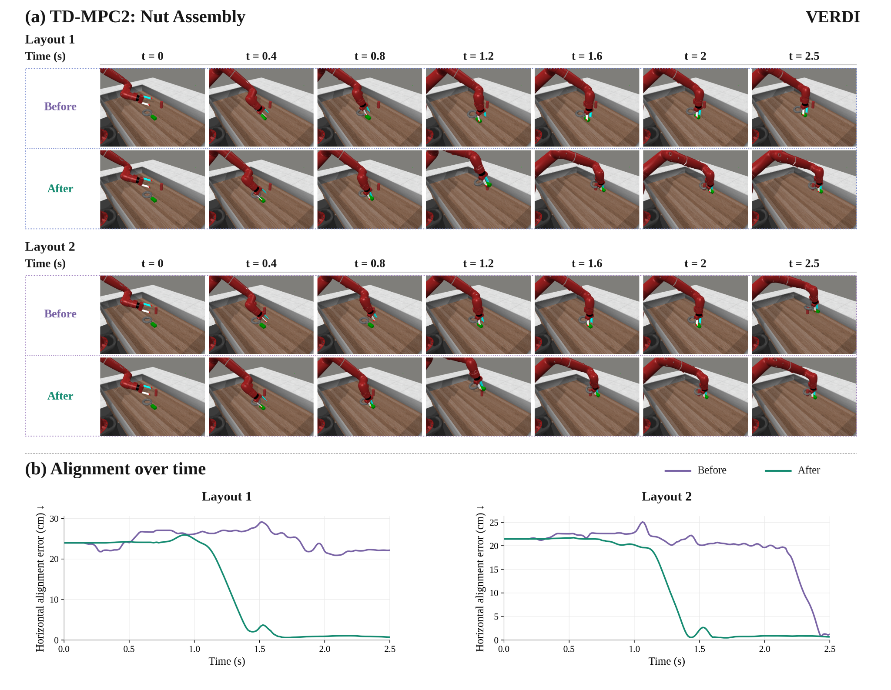
05 · Ctrl-World
Physical consistency with LaMo + drift.
The baseline over-preserves static appearance and under-uses action-conditioned motion. LaMo and drift regularization target this failure while preserving the backbone interface.
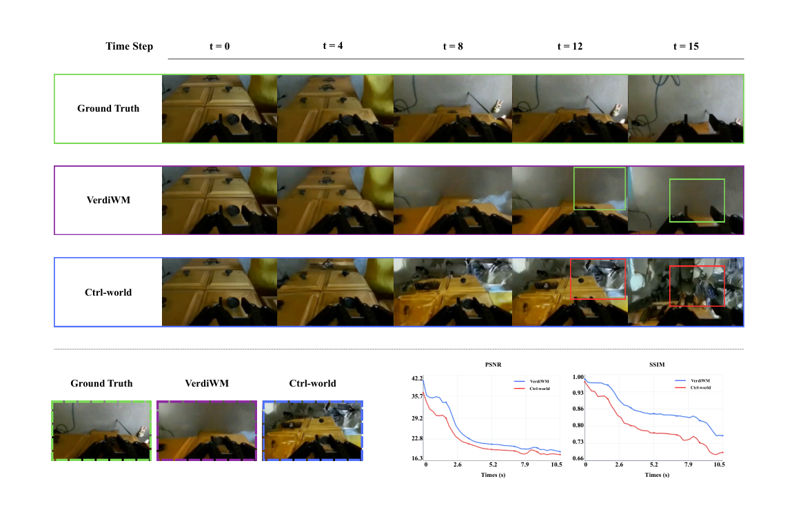
Quantitative results
| Metric | Ctrl-World | VERDI | Change |
|---|---|---|---|
| Semantic alignment | 90.70 | 91.30 | +0.60 |
| Depth accuracy | 93.28 | 96.16 | +2.88 |
| Aesthetic quality | 32.75 | 36.12 | +3.37 |
| Background consistency | 86.37 | 85.11 | −1.26 |
| Dynamic degree | 45.32 | 43.78 | −1.54 |
| Flow score | 26.54 | 30.35 | +3.81 |
| Motion smoothness | 68.75 | 81.53 | +12.78 |
| Subject consistency | 84.31 | 83.35 | −0.96 |
WorldArena scores use a 0–100 scale. Background consistency, dynamic degree, and subject consistency remain lower. Tables 1–2 below also include PSNR, SSIM, LPIPS, and FID.
Qualitative replay · all four samples
Top row: ground truth. Middle row: VERDI. Bottom row: original Ctrl-World.
Ground truth / VERDI / Ctrl-World
Ground truth / VERDI / Ctrl-World
Ground truth / VERDI / Ctrl-World
Ground truth / VERDI / Ctrl-World
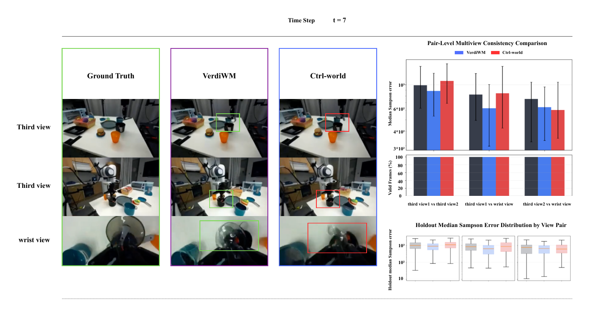
06 · Cosmos-Predict2 REP
Representation repair and WorldArena evaluation.
DINO representation targets improve object boundaries, scene layout, geometry, and motion; the appearance-consistency trade-offs remain explicit.
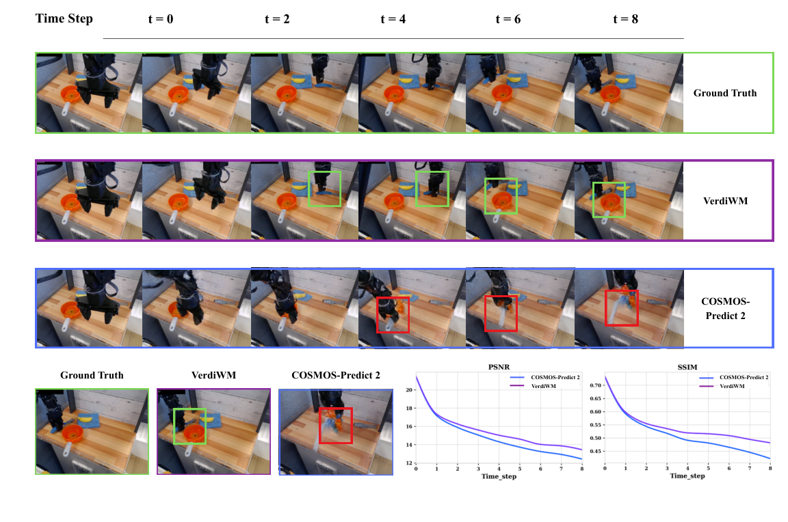
Qualitative replay for the REP campaign: baseline is shown on the right, while the VERDI REP prediction is compared under the same context as the paper figure above.
WorldArena · all eight metrics
| Metric | Cosmos-Predict2 | VERDI | Change |
|---|---|---|---|
| Semantic alignment | 90.38 | 90.82 | +0.44 |
| Depth accuracy | 95.35 | 97.05 | +1.70 |
| Aesthetic quality | 36.05 | 37.30 | +1.25 |
| Background consistency | 85.35 | 82.73 | −2.62 |
| Dynamic degree | 42.18 | 43.15 | +0.97 |
| Flow score | 29.55 | 30.70 | +1.15 |
| Motion smoothness | 78.93 | 81.31 | +2.38 |
| Subject consistency | 83.07 | 81.79 | −1.28 |
REP is higher on semantic alignment, depth accuracy, aesthetic quality, dynamic degree, flow score, and motion smoothness.
Depth accuracy increases from 95.35 to 97.05, and motion smoothness increases from 78.93 to 81.31.
Background consistency and subject consistency remain lower for REP, which is logged as a boundary of the REP repair rather than hidden inside a single aggregate score.
07 · RoboCOIN
Adaptation to a new robot embodiment.
Agilex Cobot Magic · DreamDojo / Cosmos Predict2 · action-conditioned video-to-world
This experiment follows the paper's automatic-adaptation setting: given a new robot embodiment, action interface, camera layout, and task distribution, VERDI constructs the training and replay contract without a hand-written adapter. The target dataset is RoboCOIN-DataManager . The robot embodiment is Agilex Cobot Magic . From the dataset structure, embodiment metadata, camera viewpoint, and action interface, the system selects a compatible base model and continues training DreamDojo/Cosmos Predict2 action-conditioned video-to-world from the AgiBot post-train 2B weights.
RoboCOIN introduces Agilex Cobot Magic rollouts, a new task distribution, object layout, and camera setup; the agent maps those signals into the training and replay contract.
The selected structure keeps Cosmos Predict2 video-to-world generation and adds action conditioning so predicted future frames respond to robot actions.
Each video includes a no-action prediction. This checks that the model is using action input rather than performing unconditional visual completion.
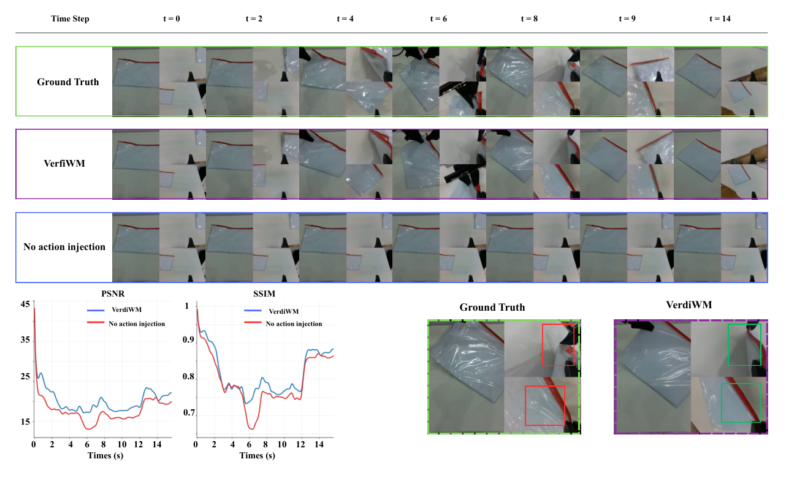
Action-conditioned replay and no-action controls
Left: ground truth. Middle: action-conditioned prediction. Right: no-action prediction.
Chinese task name: 打开绿色的文件夹. The rollout compares ground truth, the trained action-conditioned world model, and a no-action prediction.
Chinese task name: 打开红色的文件夹. The same three-column comparison is used to verify that action injection changes the predicted trajectory.
This mosaic replay stresses cross-view agreement. VERDI keeps the object interaction and motion progression coherent across three views, showing that the adaptation is not limited to a single camera stream.
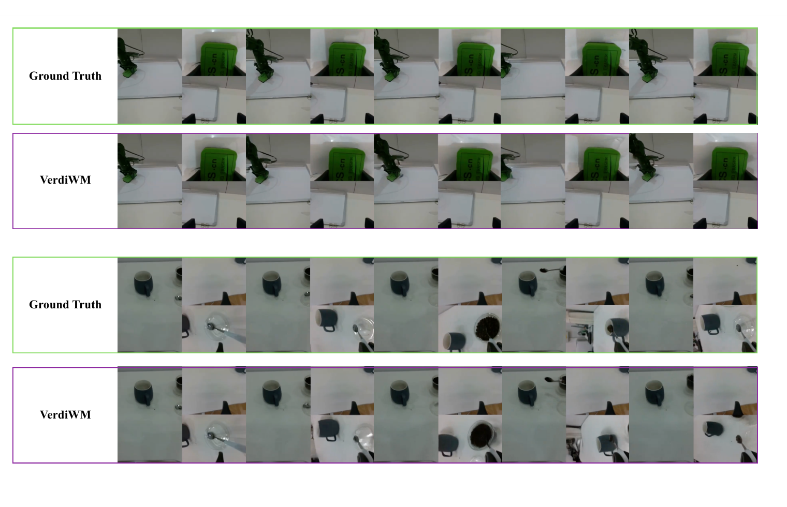
08 · Policy RL
Action-quality rollouts in RoboLab120.
Closed-loop success and verified progress ground the reward. Video and VLM checks remain audit evidence.
The paper tests whether video-level repair translates into action quality: the repaired Cosmos3 policy is evaluated as a closed-loop action generator. This block-stacking overview adds a RoboLab120 rollout view, with baseline and repaired/RL-updated behavior shown as paired clips.
R = 10 * terminal_success + 2 * verified_progress - bounded invalid_action_penalty - bounded trusted_safety_penalty.
Terminal success comes from RoboLab, and progress comes only from verified subtask/progress fields, matching the paper's rule that video scores do not substitute for environment success.
Failed trajectories are capped below successful trajectories; safety events enter the final quality gate; video/VLM checks remain audit-only evidence.
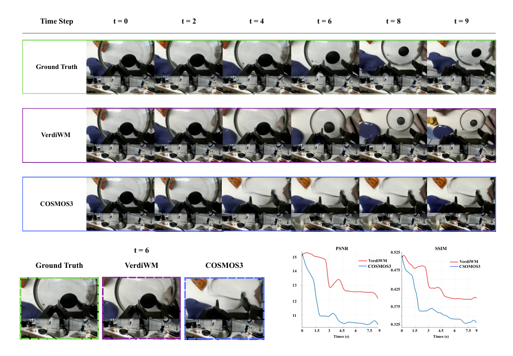
Four paired rollouts compare the original Cosmos3 behavior with the RL-trained policy under the same RoboLab120 task family.
The scene is kept the same, but the block positions are swapped. The RL-trained policy preserves the block-stacking behavior under this object re-layout, showing generalization beyond the original placement.
09 · Real robot
FRANKA task comparisons.
Franka Panda · paired COSMOS3 and improved-policy demonstrations · videos at 4× speed
On the two quantitative Franka Panda tasks in Section 4.2, VERDI-selected RL + self-forcing increases average success from 45.0% to 62.5%. The paired videos below additionally illustrate block stacking, tablecloth folding, and an occluded bowl-to-drawer sequence.
Stack three blocks, fold the white tablecloth, and move a polyhedron from a bowl into a drawer before closing it.
The stacking rollout is affected by the blue bowl, the folding rollout takes a longer path, and the drawer task fails under bowl occlusion.
The improved policy completes the stack, uses a more direct folding path, and completes the occluded pick–place–close sequence in the displayed rollouts.
Baseline rollout: the policy reaches the late-stage interaction, but bowl interference prevents a clean blue-block grasp.
Improved rollout: the policy keeps the grasp sequence stable and completes the three-block stacking task.
Baseline rollout: the task is eventually approached through a long, inefficient trajectory, exposing weak path planning on deformable-object manipulation.
Improved rollout: the motion plan is shorter and cleaner, showing a clear gain in path planning after the COSMOS3 update.
Baseline rollout: the polyhedron is occluded inside the bowl, and the policy cannot establish a reliable grasp before the drawer step.
Improved rollout: the policy grasps the occluded object, places it into the drawer, and closes the drawer to complete the task.
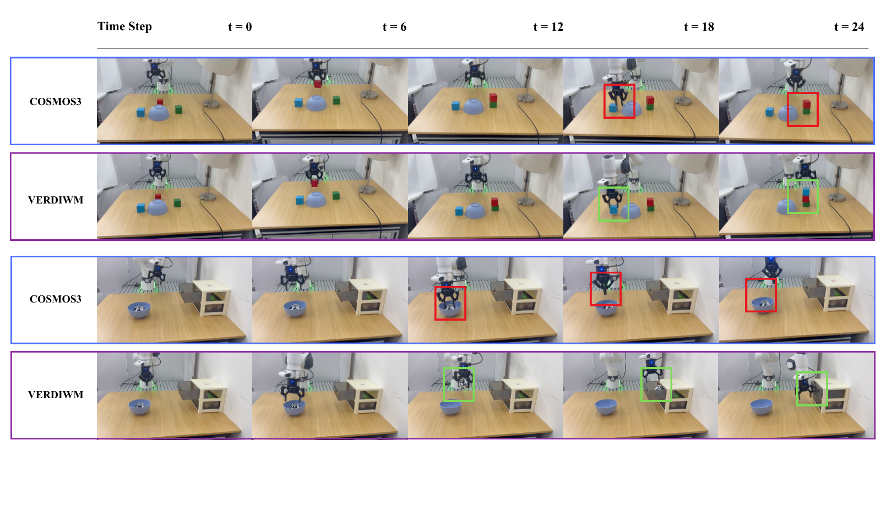
| Real-robot task | Baseline COSMOS3 | COSMOS3 with VERDI-selected operator | Improvement |
|---|---|---|---|
| Pick-and-place | 11/20 = 55% | 14/20 = 70% | +15 pp |
| Drawer opening | 7/20 = 35% | 11/20 = 55% | +20 pp |
| Mean across the two tasks | 45.0% | 62.5% | +17.5 pp |
| Simulation task | Baseline COSMOS3 | COSMOS3 with VERDI-selected operator | Improvement |
|---|---|---|---|
| Pick-and-place | 62% | 74% | +12 pp |
| Drawer opening | 41% | 59% | +18 pp |
| Peg insertion | 28% | 52% | +24 pp |
Real-robot success uses 20 trials per method and task. Simulation uses 50 episodes per seed, method, and task; reported percentages are means across seeds. The three paired video demonstrations above provide additional qualitative examples.
10 · Research memory
Repair recipes, evidence, and claim boundaries.
Each memory links model context, intervention, supporting evidence, and the documents that make the repair reusable.
Evidence-licensed memory
Ctrl-World LaMo Repair
Cosmos-Predict2 REP Repair
RoboCOIN Transfer
Action-Quality Rollouts
FRANKA Real-Robot Trials
Frozen verification → claim frontier
Evidence-Licensed Memory
VERDI stores actions, receipts, model context, validity gates, and claim boundaries so repairs are reused only when evidence licenses transfer.
- Model / architecture
- Operational and epistemic control planes over world-model repair campaigns
- Data / embodiment
- Run receipts, paired probes, replay artifacts, metrics, and verifier outputs
- Intervention
- Claim-licensed repair memory and certified transfer
- Evidence
- Action -> receipt -> settlement vector -> claim-frontier update
VERDI Research Memory Graph
Defines each node as a bounded repair episode with time, model, dataset, intervention, gate status, and claim scope.
- Indexes model changes by claim scope rather than by loose chat history.
- Connects experiment artifacts to reusable repair decisions.
- Keeps the page-level visualization aligned with the evidence contract.
Evidence Claim Gate Skill
Defines when a VERDI result is allowed to become a reusable repair claim.
- Separates environment success from video or VLM audit evidence.
- Requires action requests, execution receipts, and verification artifacts.
- Updates the claim frontier only when evidence is sufficient.
Ctrl-World LaMo Repair
A physical-consistency diagnosis found copy-current-frame behavior and weak action-driven latent transition.
- Model / architecture
- Ctrl-World SVD-UNet with action encoder
- Data / embodiment
- Ctrl-World action-conditioned rollout data
- Intervention
- LaMo latent motion prior, drift loss, frozen SVD/VAE parts, hierarchical LR
- Evidence
- WorldArena metrics, PSNR/SSIM/LPIPS/FID, qualitative replay, and validity-gate annotations
Ctrl-World + LaMo Fusion Training Skill
A concrete architecture and training recipe for adding latent motion priors to Ctrl-World.
- Adds a motion-prior branch and drift readout in latent space.
- Keeps stable SVD/VAE components frozen while training action-sensitive layers.
- Uses targeted ablations to test whether motion is action-conditioned.
Evidence Claim Gate Skill
Records how the LaMo intervention should be promoted only after evidence clears the claim gate.
- Do not treat a lower scalar loss as sufficient mechanism evidence.
- Require replay or latent-separation checks before widening the claim.
- Keep the intervention scoped to the Ctrl-World physical-consistency failure mode.
Cosmos-Predict2 REP Repair
REP uses representation signals to improve structure, geometry, and motion while exposing an appearance-consistency boundary.
- Model / architecture
- Cosmos-Predict2 video-to-world rollout model
- Data / embodiment
- BridgeData replay set with WorldArena-style metrics
- Intervention
- Train-test aligned DINO-REP conditioning
- Evidence
- Semantic alignment, depth, flow, motion smoothness, qualitative replay, and gate-limited claim scope
DINO-REP Cosmos-Predict2 Repair Skill
Encodes the REP intervention and the next-patch rule for appearance-consistency boundaries.
- Treats depth and motion gains separately from appearance consistency.
- Uses metric deltas to route the next patch rather than stopping at a score.
- Targets REP injection position and appearance retention when needed.
RoboCOIN Transfer
The agent selected a compatible action-conditioned video-to-world setup from dataset structure, embodiment, viewpoint, and action interface.
- Model / architecture
- DreamDojo/Cosmos Predict2 action-conditioned video-to-world
- Data / embodiment
- RoboCOIN-DataManager / Agilex Cobot Magic
- Intervention
- Dataset adapter, embodiment-aware base-model selection, no-action control replay
- Evidence
- Green-folder, red-folder, and three-view consistency qualitative comparisons
RoboCOIN Transfer Adapter Skill
Documents how the transfer node maps dataset and robot metadata into a model adaptation decision.
- Uses embodiment and camera metadata before choosing the base model.
- Keeps no-action prediction as an overfitting control.
- Scopes the claim to selected RoboCOIN tasks and replay evidence.
Action-Quality Rollouts
The action-quality node checks whether long-horizon world-model repair improves policy rollouts under environment-grounded success criteria.
- Model / architecture
- Cosmos3-DROID policy
- Data / embodiment
- RoboLab120 block-stacking rollouts
- Intervention
- Reward-bounded RL with safety and invalid-action penalties
- Evidence
- Block-stack original-vs-RL paired rollouts and reward contract
RoboLab120 Policy-RL Reward Skill
Defines the RL reward and its constraints so progress cannot fake terminal success.
- Terminal success comes from RoboLab, not VLM scoring.
- Failed trajectories are capped below successful trajectories.
- Video and VLM checks remain audit-only.
FRANKA Real-Robot Trials
The real-robot node compares original Cosmos3 and repaired Cosmos3 on stack, fold, and occluded drawer manipulation.
- Model / architecture
- Repaired Cosmos3 real-robot policy stack
- Data / embodiment
- FRANKA real-world task videos
- Intervention
- Real-robot transfer with improved grasping, path planning, and occlusion handling
- Evidence
- 4x H.264 comparison videos for stack, tablecloth, and drawer tasks
FRANKA Real-Robot Transfer Skill
Summarizes the task set, observed original failures, and repaired Cosmos3 behavior.
- Tracks stack, fold, and drawer tasks under the same real-robot section.
- Uses accelerated public videos for presentation, not for changing task labels.
- Links each qualitative claim to a visible comparison artifact.
Frozen Verifier
The verifier node prevents the memory graph from turning every observation into a broad claim.
- Model / architecture
- Model-agnostic claim policy
- Data / embodiment
- Execution receipts, metrics, replays, and environment outcomes
- Intervention
- Independent verification before claim-frontier update
- Evidence
- Pass/fail gates and bounded claim scopes
Evidence Claim Gate Skill
Defines the gate logic for promoting a result into a reusable memory.
- Record the proposed intervention and execution receipt.
- Verify success with the authority appropriate for the claim.
- Keep video/VLM audit evidence separate from environment success.
VERDI Research Memory Graph
Explains how the graph indexes evidence by model, dataset, intervention, and claim scope.
- Prevents score-only memory from hiding mechanism failures.
- Makes prior patches inspectable before selecting the next action.
- Connects knowledge nodes to concrete skill documents.